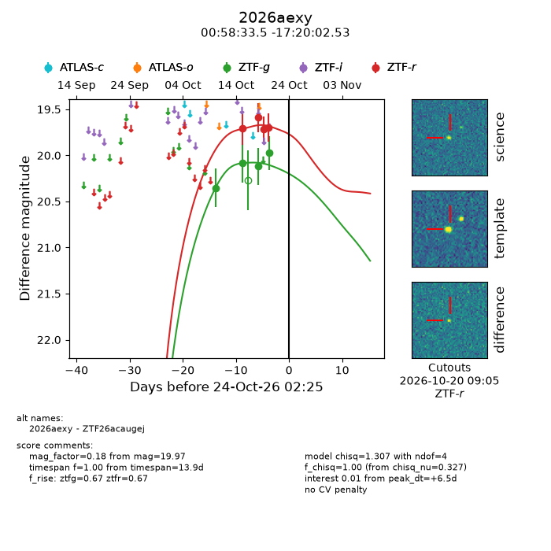
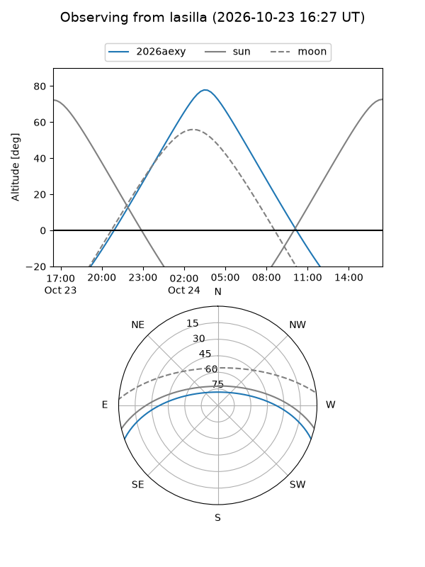
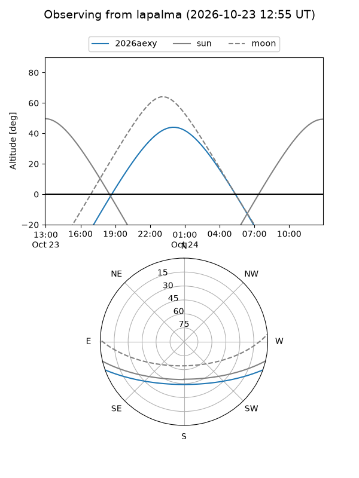
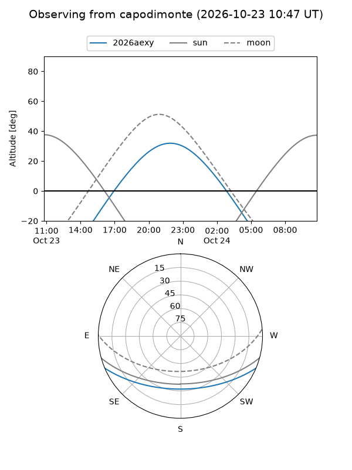
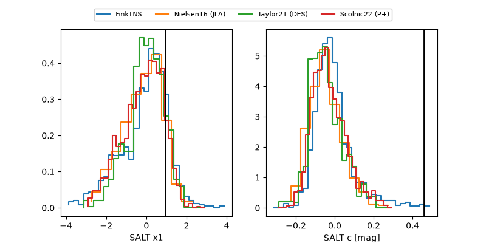

2026aexy
Target 2026aexy at 2026-10-24 02:26
Aliases and brokers:
FINK-ZTF: ztf.fink-portal.org/ZTF26acaugej
Lasair-ZTF: lasair-ztf.lsst.ac.uk/objects/ZTF26acaugej
ALeRCE-ZTF: alerce.online/object/ZTF26acaugej
YSE-PZ: ziggy.ucolick.org/yse/transient_detail/2026aexy
TNS name: wis-tns.org/object/2026aexy
Direct TNS query: direct search
alt names
ZTF26acaugej (ztf,fink_ztf)
2026aexy (tns,yse)
Coordinates:
equatorial (ra, dec) = 14.6395,-17.33404
equatorial (HMS+DMS) = 00:58:33.49,-17:20:02.53
galactic (l, b) = (132.8319,-80.06865)
Flags:
peak dt: +6.5
Photometry:
last ztfg=19.97, ztfr=19.70
4 ztfg, 4 ztfr detections
Lightcurve

Visibility



Additional plots
